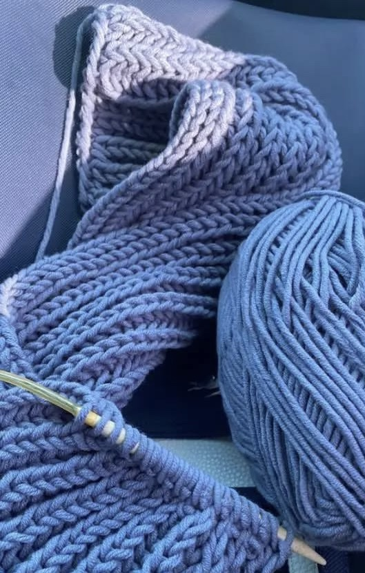
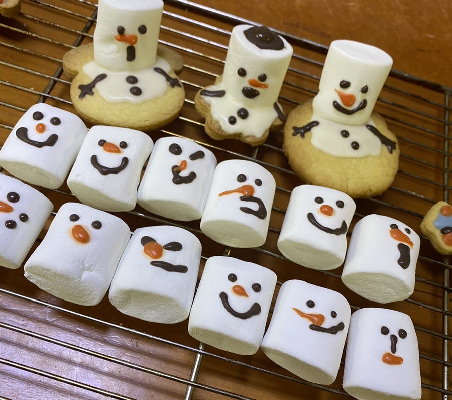
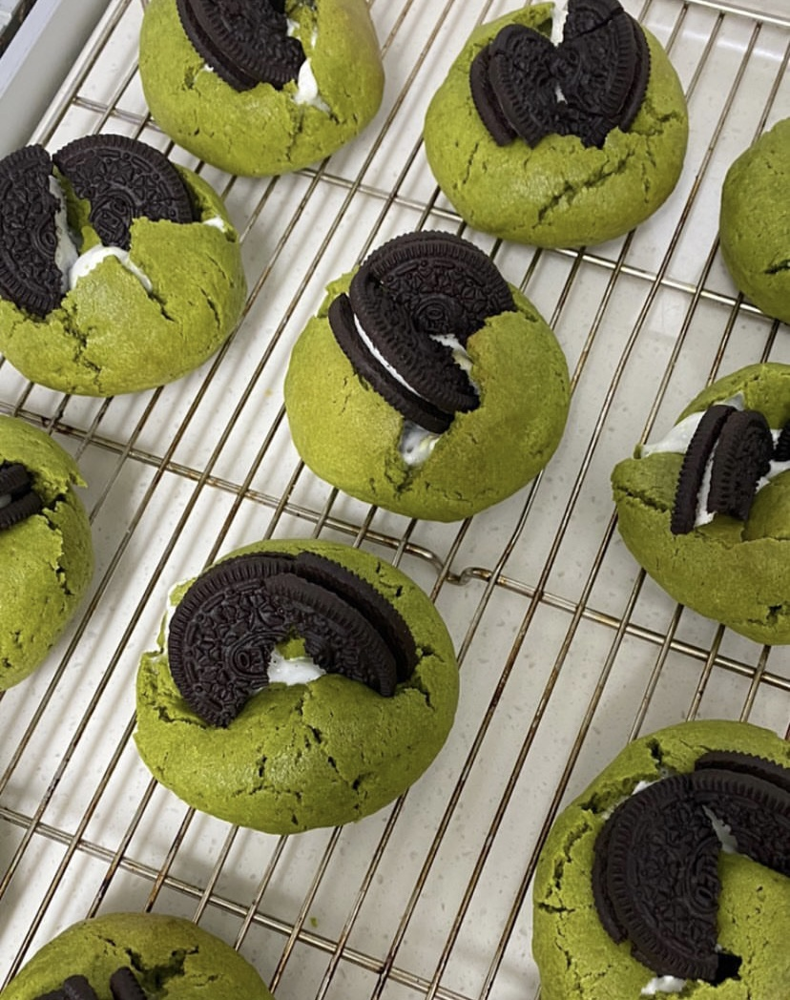
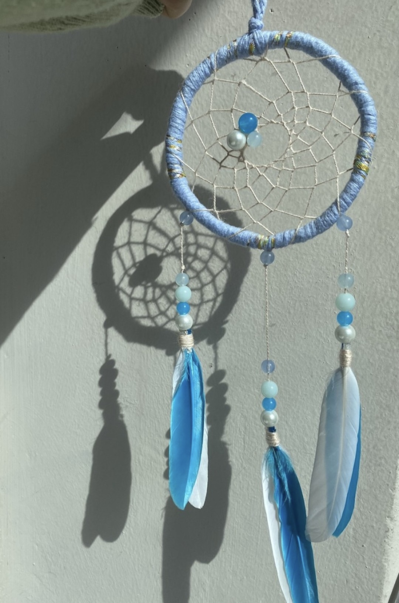

나의 취미 생활




저는 익스트림 스포츠, 뜨개질, 베이킹, OTT 관람, 손으로 무언가 만들기 등등 다양한 취미를 갖고 있어요.
특히 익스트림 스포츠류는 다 좋아해요! 어렸을때 축구, 수영, 농구, 인라인스케이트, 스키, 줄넘기 등 다양한 스포츠를 배웠고 성인이 되고 나서는 스노우보드, 웨이크보드, 스케이트보드, 서핑 등 탈 수 있는 판때기는 다 타는 판때기 러버입니다! 보드 외에도 클라이밍도 좋아하고 자주 해요. 같이 클라이밍 가실 분 구해요 ~ 나중에 기회가 된다면 스쿠버 다이빙, 스카이 다이빙 .. 등 더 많은 익스트림 스포츠를 체험해보고 싶어요!
겨울에는 베이킹, 뜨개질을 주로 해요. 저와 친하게 지내면 어느날 갑자기 쿠키나 핸드메이드 목도리를 선물받을 수도 있다는 사실 ~!